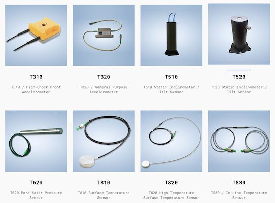
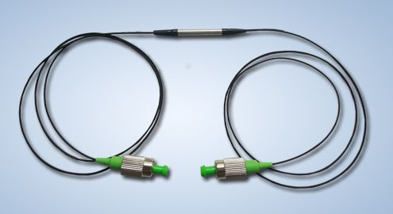
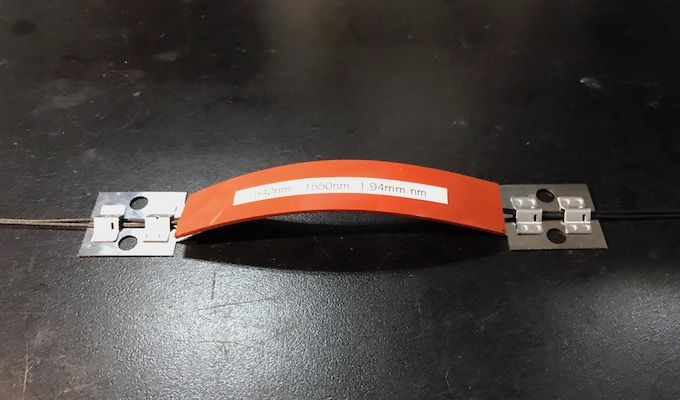

Company profile:
Technica Optical Components, LLC

Fiber technology to sense the world.
Technica Optical Components, LLC
3657 Peachtree Rd NE
Suite 10A
Atlanta, GA 30319
United States
| Tel.: | +1 404 326 3469 |
| Fax: | +1 775 420 4683 |
| E-mail: | |
| Website: | www.technicasa.com |
| Social media: | |
| Quality certification: | ISO 9001:2008 |
Company Description
TECHNICA is a leading developer and manufacturer of industrial grade Fiber Bragg Gratings for sensing and filtering applications. Providing top-quality FBG sensors for strain, temperature, acceleration, angle-tilt, displacement, pressure, humidity, flow, load, and other monitoring using original and UTC, UIC and other licensed technologies. The company produces high-quality gratings at a competitive price for both high-volume and high-customization applications.
Technica's ISO 9001 flexible production system provides the company with the unique ability to manufacture premium grade FBGs in single mode fibers with acrylate, polyimide, metal, carbon and other coatings, in radiation resistant fibers, in low-bend radius fibers, and in multi-core fibers as well. Technica FBGs are currently mass-produced for the medical, energy, civil engineering, geotechnical, industrial, transportation, security and other markets.
Technica is headquartered in USA and its volume manufacturing facilities are based in Beijing, China.
Products
| Product | Description |
|---|---|
| Bragg gratings |  World leader in premium grade fiber Bragg gratings. High quality components reliably used in hundreds of applications worldwide. |
| contract manufacturing | Contract manufacturing begins with a fiber Bragg grating made by Technica. Then, our company makes its portfolio of its in-house state-of-the-art technologies available for building on and around the FBG to meet the customer’s specific requirements. Whether the FBG is to be built-up into a custom array, into a special cable sensor, into a packaged strain, temperature, pressure, angle, displacement, or other type of sensor, or into an optical communications cassette together with other optical devices according to our customers' designs, we are well prepared to manufacture! |
| fiber Bragg gratings |  Premium quality fiber Bragg gratings and FBG arrays for customized sensors, polyimide-coated sensors to 300 °C, gold-coated hermetically sealed sensors, small-diameter FBGs, radiation hard/proof sensors, tilted FBGs, and high-temperature FBG sensors to 1000 °C. We also produce FBG matched pairs for fiber lasers and athermal FBG wavelength references. See also our white papers on Reinforced FBG Sensors Serve Demanding Applications and Gold and Steel Protected FBGs Enable Robust Sensing in Harsh and High Temperature Environments! |
| fiber cables |  The process begins with a fiber Bragg grating or FBG array made by Technica. We then package the fiber(s) into specialized cables such as Armor (T110), GFRP (T130), Steel (T140), PEEK/TEFLON (T150), Gold (T160). We also package multiple FBG arrays within the the same cable in length ranges far beyond standard available technologies. |
| fiber-optic sensors (… and related equipment) |  Premium quality fiber Bragg grating sensors and FBG array sensors in acrylate, polyimide, and gold coated fibers, specialized polyimide-coated sensors to 300 °C, high-T FBG sensors to 1,000 °C, radiation hard/proof sensors, bio-chem tilted FBG sensors and ultra-thin FBG sensors and arrays. We produce GFRP FBG cable sensors for embedding into concrete and other materials, Zeus PEEK FBG cable sensors for monitoring in transformers and chemically active environments, and vibration-sensitive cable sensors for security. See also our white papers on Small-Diameter Thin FBGs Ideally Suited for Embedded Sensing in Composites and Technologies for high temperature fibre Bragg gratings! |
| optical filters |  World leader in Fiber Bragg grating and Fabry Perot filters. Product portfolio includes athermal Fabry-Perot etalons (TWR30) and athermal FBGs (TWR50), as well as tunable FBGs (T10-T980) and tunable Fabry-Perot filters (TFP10-TFP50). |
| optical sensors |  Our fiber Bragg grating based packaged sensors are available in a wide range of optical specifications and mechanical configurations. For custom OEM sensors, our company works closely with each customer to optimize the packaging for the sensors they would like to have manufactured by us. Technica undertakes a rigorous development process before products release. We are committed to continuous improvements after release to insure performance to the highest of standards. |
| strain sensors |  World leader in fiber Bragg grating and micro Fabry–Pérot strain sensors. From ultra-small to large industrial strain sensor packaging, for strains from sub-microstain to 50,000 microstrain, for environments from cryogenic to 1000 °C, and with cores based on standard acrylate or polyimide coated fibers, or truly hermetic copper or gold coated fibers (T15, T25, T100, T130, T150, T170, T210, T220, T230, T240, and TFP10). |
| temperature sensors |  World leader in fiber Bragg grating and micro Fabry–Pérot temperature sensors. From ultra-small to large industrial temperature sensor packaging, for environments from cryogenic to 1000 °C, and with cores based on standard acrylate or polyimide coated fibers, or truly hermetic copper or gold coated fibers (T10, T20, T25, T98, T100, T105, T135, 140, T155, T165, T810-T890, and TFP10). |
| vibration sensors |  Fiber Bragg grating and micro Fabry–Pérot vibration sensors. From standard sensitivity to dramatically amplified or de-amplified sensitivity, from ultra-small to large industrial vibration sensor packaging, for environments from cryogenic to 800 °C, and with cores based on standard acrylate or polyimide coated fibers, or truly hermetic copper or gold coated fibers (T15, T25, T99, T130, T155, T160, T210-T290, and TFP10). |
| wavelength division multiplexing (equipment for …) |  Technica provides several of the key components used in wavelength division multiplexing solutions including fiber Bragg gratings (Txxx family of products), Fabry–Pérot etalons and tunable filters (TFPxxx family of products), and athermal references including HCN and C2H2 gas cells (TWRxxx family of products). |
Promotions


Information of Technica Optical Components Appears on the Following Pages
Company profile (this page)
Pages with Suppliers for Products
Bragg gratings, contract manufacturing, fiber Bragg gratings, fiber cables, fiber-optic sensors, optical filters, optical sensors, strain sensors, temperature sensors, vibration sensors, wavelength division multiplexing
Encyclopedia Articles
Bragg gratings, fiber Bragg gratings, fiber cables, fiber-optic sensors, optical filters, wavelength division multiplexing
Profiles of Other Suppliers
Technica Optical Components is shown as alternative supplier on 212 pages of other suppliers not having an ad package.
Other Pages
The banner which is included in the ad package will randomly appear on various pages.
On various pages, a banner can randomly show up which displays a random selection of logos of suppliers with an ad package.